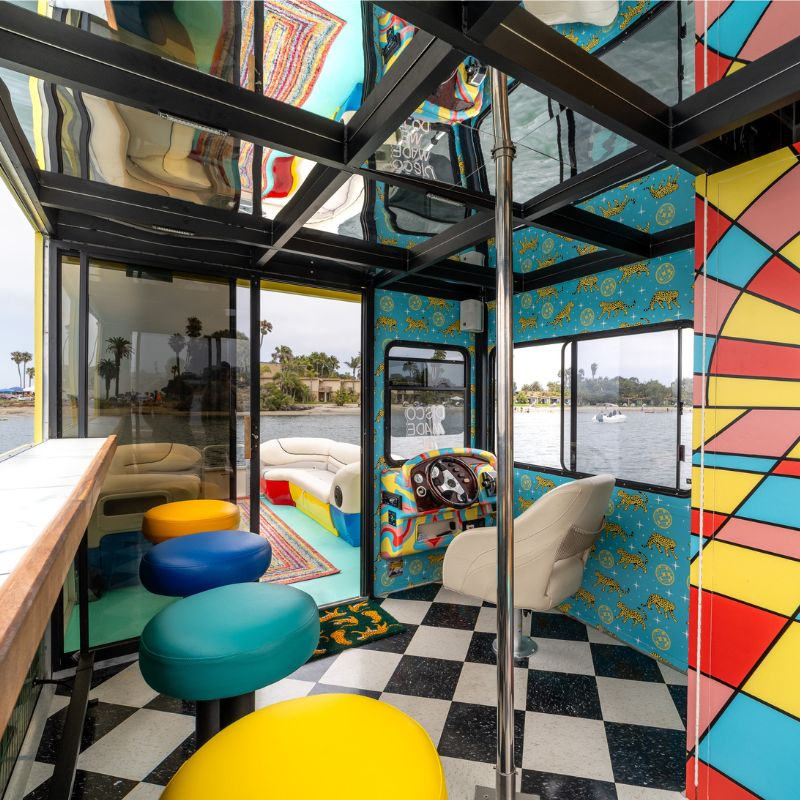
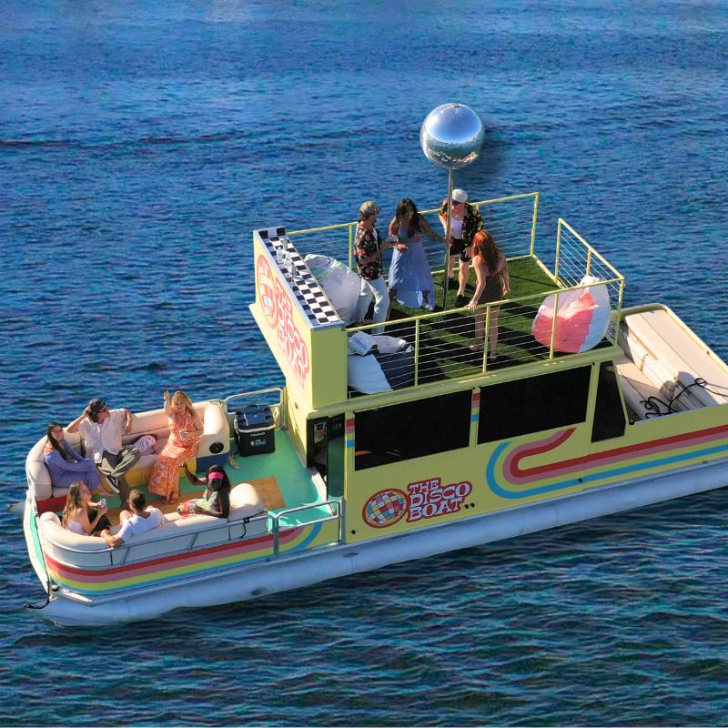
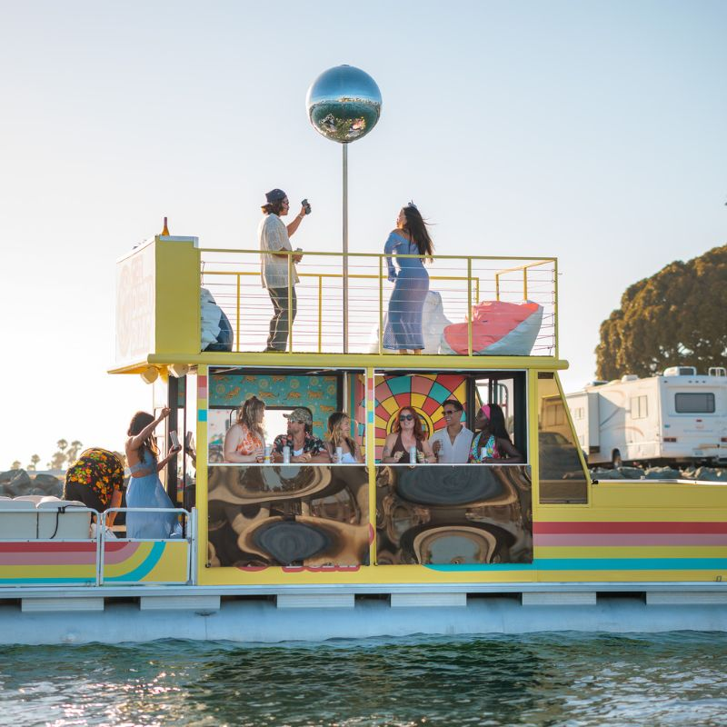
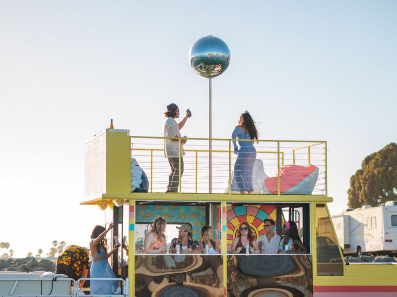
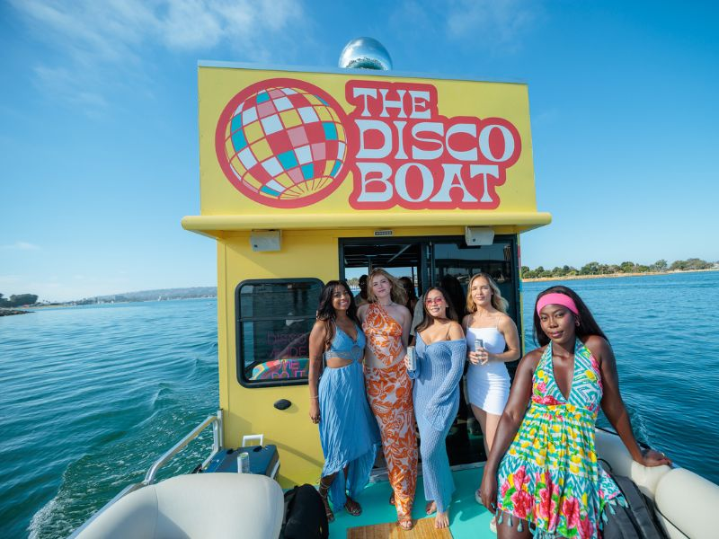

Disco Boat Rentals — San Diego.32' party cruiser · rooftop disco ball · 12 guests · captained or self-drive
A chrome dance pole, a rainbow 5-seat bar, a leopard-print lounge, fold-down windows to the bay, and a rooftop deck with a mirrored disco ball that scatters sparkle across the water at sunset. The Disco Boat is San Diego's bachelorette, birthday, Pride, and themed-party charter — on a 32-foot Suntracker out of Shelter Island.
A party boat that doesn't pretend to be a yacht.
San Diego has plenty of charters trying to sound like Newport Beach. The Disco Boat does the opposite. The interior is a 1970s lounge with leopard-print walls, mirrored ceiling panels, a chrome dance pole, and a 5-seat rainbow bar with jewel-tone stools. The rooftop is turf with bean-bag seating and a giant disco ball that lights up at golden hour and scatters sparkle across the bay. If your group's vibe is "let's actually dance," this is the boat. If you want a beige sunset sail with a fruit platter, book somewhere else.
- The boat is built for the moment. Dance pole, bar, mirrored ceiling, disco ball — these aren't add-ons. They're the boat. Other charters charge you for "themed decor." Here it's the floor.
- Fold-down windows. Open the cabin to the bay for full-volume party mode, or close it down when the marine layer rolls in for a cozy lounge. Same boat, two energies.
- Captained OR self-drive. Most San Diego charters force a captain. The Disco Boat lets you take the helm if you'd rather (we orient you at the dock first). Same disco ball, fewer fees.
- Shelter Island home dock. Easy parking, short walk to the boat. We're not hidden behind a resort lobby — show up, get on, go.

One boat, built to be the room.
A 32-foot Suntracker Party Cruiser fitted out as a 1970s lounge from the floor to the ceiling. Three distinct spaces — rooftop, interior, fold-down deck — that combine into one party. Up to 12 guests. Captained or self-drive.


Bachelorette party boat — San Diego.
The Disco Boat is the bachelorette boat in San Diego. Twelve seats around a rainbow bar, a chrome pole between the dance floor and the mirrored ceiling, and a rooftop deck for the photo dump. BYOB cooler on board, custom playlists welcome, sashes optional but encouraged.

Most bachelorettes book the boat for a 2-3 hour cruise with the captain handling the helm so the bride and her group can stay on the dance floor and the rooftop. Specific hourly rates and the captain fee are confirmed at booking — call or text the line if you want to talk through a specific date.
The interior turns into a full party with the fold-down windows open. Music piped through the boat speakers (AirPlay or Bluetooth). Rainbow bar set up for cocktails — bring your shaker, your garnishes, your "team bride" napkins. BYOB welcome, including glass with reasonable care.
The rooftop is where the photos happen. Bean-bag seating in turf, the full-size mirrored disco ball lit up by golden hour, and a 270° view of San Diego Bay. The photos write themselves. Add the rooftop photography setup as an add-on and we'll have the group shots ready to post by the time the boat docks.
Build the party around the theme. The boat already gets you halfway there.
The Disco Boat is built for theme. The interior is already a 1970s set — leopard walls, mirrored ceiling, chrome pole, rainbow bar. Add decorative lighting, a curated playlist, rooftop photography, and the boat becomes whatever you bring to it: a Studio 54 night, a Pride deck party, a costumed bachelor cruise, a fully custom build for a brand launch or birthday milestone.
1970s Disco Night. The default. Show up in your best jumpsuit, your platforms, your fur. We'll cue the playlist, light up the disco ball, and the rooftop becomes a dance floor under the sparkle.
Pride. San Diego Pride is one of the biggest weekends on the bay, and the Disco Boat is the deck for it. Rainbow bar, rooftop disco ball, fold-down windows open to the water — the rainbow flag flies from the rooftop and the boat becomes a floating Pride party. Book Pride weekend early; the calendar fills.
Custom. Tell us the vibe — milestone birthday, costume party, brand launch, music-video shoot — and we'll build the boat around it. Add-ons cover playlist curation, decorative lighting packages, and rooftop photography setups so the party shows up in the photos the same way it shows up in person.
Sunset on San Diego Bay, with the disco ball lit.
The Sunset Disco Ball Cruise is the signature run on the Disco Boat. Depart Shelter Island before golden hour, head into the open bay, and as the sun drops the rooftop disco ball lights up and scatters sparkle across the water. Coronado in the background, downtown skyline behind that, the boat doing what it was built to do.
Cruise departs in the hour before sunset and runs through golden hour into the blue-hour minutes after. Captain handles the helm and routes around the wind and where the sky is firing best. Specific departure time shifts with the season; we lock it in when you book.
Best for: milestone birthdays, anniversaries, proposals, brand shoots, end-of-conference send-offs, and Pride-week golden hours. The mirror ball is the moment — bring the camera. The rooftop bean-bags + the bay backdrop is the shot.
Drinks: BYOB welcome. Cooler with ice provided. Music piped through the boat speakers (AirPlay / Bluetooth). Bring a layer for after the sun drops — the bay gets breezy fast.
The boat in its natural habitat.
A 1970s lounge on San Diego Bay. Rooftop disco ball lit up at golden hour, leopard interior with the chrome pole in frame, fold-down windows open to the water, and a 32-foot Suntracker built to be the room. Full gallery coming as we open up sailings — follow @discoboats for new shots as they drop.

Get on the list. First in line gets launch week.
Drop your name, email, and phone. We'll send the moment bookings open — waiting-list members get first-pick on dates before public availability. Bachelorette, Pride weekend, milestone birthdays, sunset cruises: every category has a date that books fast.
If the form isn't loading, open it in a new tab:
Open the waiting list →2700 Shelter Island Drive · Point Loma · San Diego Bay.
San Diego, California 92106
Point Loma · San Diego Bay